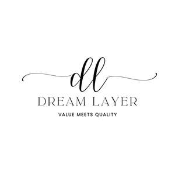

Trade Mark Journal No.2025/046 14 November 2025
UK00004253793 24 August 2025 (8,20,24)

- Class 8
- Cutlery; Silverware [cutlery, forks and spoons]; Forks [cutlery]; Knives being tableware; Canteens of cutlery; Table cutlery [knives, forks and spoons]; Tableware [knives, forks and spoons]; Biodegradable cutlery; Spoons being tableware; Hand-operated cutlery; Disposable tableware [cutlery] made of plastics; Forks being tableware; Spreaders [cutlery]; Spreaders being cutlery; Cutlery, kitchen knives, and cutting implements for kitchen use; Table knives, forks and spoons of plastic; Boxes for cutlery [fitted]; Silver plate [knives, forks and spoons]; Knives, forks and spoons; Canteens of cutlery made of precious metal; Plastic spoons, table forks and table knives; Boxes adapted for cutlery; Kitchen knives; Cutlery of precious metal for cutting; Cutlery of precious metals; Cutlery for use by children; Table knives, forks and spoons for babies; Kitchen knives (Non-electric -); Baby spoons, table forks and table knives; Cutlery for use by babies; Ceramic knives; Stainless steel table knives; Knives; Table knives; Stainless steel table spoons; Thin-bladed kitchen knives; Biodegradable knives; Household knives; Japanese chopping kitchen knives; Disposable knives; Chef knives; Sterling silver table knives; Forks and spoons; Folding knives; Spoons; Disposable spoons; Fish slicing kitchen knives; Stainless steel table forks; Vegetable knives; Razor knives; Fruit knives; Kitchen mandolines.
- Class 20
- Mattress pads; Foam mattresses; Mattress toppers; Futon mattresses [other than childbirth mattresses]; Bed mattresses; Mattress (Straw -); Straw mattress; Mattresses; Foam camping mattresses; Mattress bases; Mattresses [other than child birth mattresses]; Latex mattresses; Beds, bedding, mattresses, pillows and cushions; Inner sprung mattresses; Nap mats [cushions or mattresses]; Memory foam pillows; Bumper guards for cots, other than bed linen; Air mattresses; Floating inflatable mattresses [airbeds]; Sleeping mats for camping [mattresses]; Inflatable mattresses for use when camping; Fire resistant mattresses; Bumper guards for cribs, other than bed linen; Camping mattresses; Inflatable pillows; Spring mattresses; Mattresses (Spring -); Latex pillows; Straw mattresses; Beds incorporating inner sprung mattresses; Bedding for cots [other than bed linen]; Bed slats; Air mattresses for use when camping; Corner protectors of plastics; Pillows; Baby head support cushions; Air bed lounger; Air pillows; Support pillows for use in baby car safety seats; Inflatable mattresses, other than for medical purposes; Inflatable neck support cushions; Bedding for nursery cots [other than bed linen]; Sleeping pads; Plastic mesh cushioning sheets for lining shelves; Protective coverings for furniture [fitted]; Protective covers for furniture [fitted]; Bamboo pillows; Sofa beds; Inflatable pillows [other than for medical use] for fitting around the neck; Inflatable pet beds; Divan beds; Sleeping bag pads; Tree protectors [tubes] not of metal; Bedding, except linen; Bath pillows; Beds; Furniture incorporating beds; Feather beds; Scented pillows; Beds for animals; Soft furnishings [cushions]; Infant beds; Beds of wood; Furniture and furnishings; Storage boxes for pillows [furniture]; Cushions [furniture]; Bunk beds; Nursery furniture; Beds for pets; Bedroom furniture; Beds for household pets; Beds for birds; Bathroom furniture; Furniture being convertible into beds; Maternity pillows; Furniture for bathrooms; Travel pillows; Cat beds; Curtain tie-backs; Curtain rods; Rods (Curtain -); Curtain hooks; Hooks (Curtain -); Shower curtain rods; Shower curtain hooks; Curtain poles; Curtain rails; Curtain fittings; Rails (Curtain -); Curtain rollers; Rollers (Curtain -); Curtain rings; Rings (Curtain -); Shower curtain rails; Shower curtain rings; Curtain pins; Curtain embraces for holding back curtains; Curtain embraces of metal for holding back curtains; Metal curtain rods; Curtain tie-backs, not of textile; Curtain runners; Curtain tracks; Metal curtain rails; Non-metal curtain rods; Metal curtain rings; Curtain embraces of plastics for holding back curtains; Curtain suspension fittings; Curtain holdbacks, not of textile; Non-metal curtain rails; Tie back hooks of brass [curtain]; Curtain hooks made of metal; Non-metal curtain rings; Rings for curtains; Wall-mounted curtain holders; Poles for curtains; Bamboo curtains; Curtains (Bamboo -); Bead curtains; Curtain suspending apparatus; Curtain suspension devices; Fittings for curtains; Rods for net curtains; Curtain hooks made of plastics; Tie back hooks made of wood [curtain]; Support rods for curtains; Tie back hooks made of plastics [curtain]; Supports for fixing curtain rods; Decorative bead curtains; Bead curtains for decoration; Curtains (Bead -) for decoration; Supports for fixing curtain poles; Support rails for curtains; Supports for supporting curtain rods; Curtain holders, not of textile material; Drapery rods; Indoor blinds, and fittings for curtains and indoor blinds; Supports for supporting curtain poles; Window blinds; Blackout blinds [slatted, indoor]; Dispensers (Fixed -) for towels; Hooks for towels (Non-metallic -); Closets (Towel -) [furniture]; Towel closets [furniture]; Boxes, not of metal, for dispensing paper towels; Towel dispensers, not of metal; Kitchen cupboards; Kitchen cabinets; Kitchen furniture; Kitchen dressers; Kitchen tables; Fitted kitchen furniture; Kitchen units; Bathroom cupboards; Kitchen dressers [furniture]; Bathroom cabinets; Wooden containers [other than for household or kitchen use]; Furniture for kitchens; Containers made of wood [other than for household or kitchen use]; Cupboards for bedrooms; Non-metallic containers [other than for household or kitchen use]; Kitchen display units; Height adjustable kitchen furniture; Non-metallic drums [other than for household or kitchen use].
- Class 24
- Comforters (bedding); Ticks (mattress and pillow coverings); Mattress covers; Contoured mattress covers; Protective loose covers for mattresses and furniture; Mattress slips [other than incontinence]; Ticks [mattress covers]; Covers for mattresses; Bed pads; Crib bumpers [bed linen]; Cot bumpers [bed linen]; Bed sheets of plastic [not being incontinence sheets]; Bed sheets of plastic, not being incontinence sheets; Pillow covers; Bed blankets; Blankets (Bed -); Bed coverings; Fabrics for manufacturing sun protectors; Shams (Pillow -); Pillow shams; Pillowcases [pillow slips]; Bed linen and blankets; Quilted blankets [bedding]; Silk bed blankets; Sleeping bag sheet liners; Fabric bed valances; Valanced bed sheets; Sofa blankets; Fitted bed sheets; Flat bed sheets; Quilt bedding mats; Pillow slips; Bed clothes and blankets; Protective covers for furniture [loose]; Bed blankets made of cotton; Protective coverings for furniture [loose]; Bed linen; Linen for the bed; Linen (Bed -); Disposable bedding of textile; Textile goods for use as bedding; Comforters for beds; Linens; Textile fabrics for use in the manufacture of bedding; Disposable bedding of paper; Canopies (bed linen); Bed clothes; Valances for beds; Crib sheets; Bedsheets; Bedspreads; Household linens; Bed linen of paper; Bath sheets (towels); Coverlets [bedspreads]; Bed linen and table linen; Textile piece goods for making bedding covers; Bed quilts; Bed valances; Bath linen, except clothing; Duvets; Cot sheets; Cot blankets; Cotton blankets; Woven fabrics for use in the manufacture of clothing for use in clean rooms; Textile fabrics for use in the manufacture of beds; Furnishing fabrics; Bath linen; Towels of textiles; Silk fabrics for furniture; Furnishing and upholstery fabrics; Infants' bed linen; Bed sheets of paper; Window furnishing fabrics; Fabrics for the manufacture of furnishings; Bed canopies; Pillowcases; Fire-retardant textile shower curtains; Bed blankets made of man-made fibres; Textiles for furnishings; Bath sheets; Woven fabrics for furniture; Bed linen made of non-woven textile material; Bathroom towels; Linen; Bedroom textile fabrics; Curtain fabric; Curtain linings; Curtain valences; Curtain fabrics; Curtain tie-backs of textile; Curtains; Curtain holdbacks of textile; Textile curtain pelmets; Curtain material; Shower curtains; Door curtains; Pleated curtains; Curtain holders of cloth; Curtain holders or tiebacks of textile; Blackout curtains; Fabric curtains; Lace curtains; Window curtains; Curtain holders (Textile -); Curtains and lace curtains of textiles or plastic; Curtains for showers; Drapes in the nature of curtains; Shower room curtains; Curtains of plastic; Swags [curtains]; Draperies [thick drop curtains]; Shower curtains of textile or plastic; Net curtains; Moquettes [curtains]; Curtains for windows; Vinyl curtains; Curtains of textile; Curtain loops of textile material; Curtain holders of textile material; Shower curtains made of plastic material; Drapes; Curtains of textile or plastic; Curtain holders of textile materials; Drapery; Curtains of textiles or plastic; Curtain loops made of textile materials; Fabrics for making curtains; Curtains made of plastics for use in shower baths; Curtains of textile material; Valances [textile draperies]; Drapes in the nature of curtains made of textile materials; Fabric valances; Towels; Bath towels; Tea towels; Beach towels; Terry towels; Kitchen towels; Kitchen towels of cloth; Dish towels; Glass cloths [towels]; Hand towels; Hooded towels; Turkish towels; Bath wrap towels; Yoga towels; Towels of textile; Towels [textile]; Towels [of textile]; Face towels; Golf towels; Glass-cloth [towels]; Towels [textile] for the beach; Dish towels for drying; Large bath towels; Face towels of textiles; Kitchen towels [textile]; Kitchen towels of textile; Children's towels; Household linen, including face towels; Hand towels of textile; Textile face towels; Face towels of textile; Towels [textile] for kitchen use; Japanese cotton towels (tenugui); Quilts of towel; Towel sheet; Textile hair drying towels; Turban towels for drying hair; Textile exercise towels; Turkish towel; Mats of linen; Face cloths of towelling; Towels [textile] for use in connection with toddlers; Towels [textile] for use in connection with babies; Cloth napkins; Face towels [made of textile materials]; Towels made of textile materials; Tea cloths; Make-up removal towels [textile] other than impregnated with toilet preparations; Paper pillowcases; Cloths; Towelling coverlets; Linen cloth; Towels of textile sold in pack form; Textile fabrics for use in the manufacture of towels; Kitchen linen; Kitchen and table linens.
Muhammad Anas Atiq